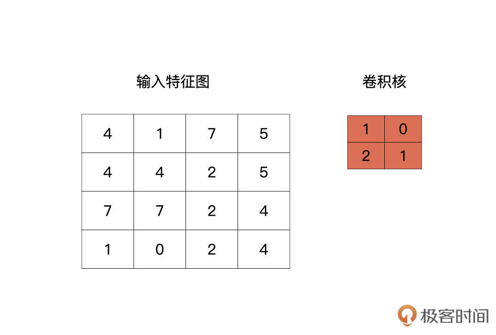
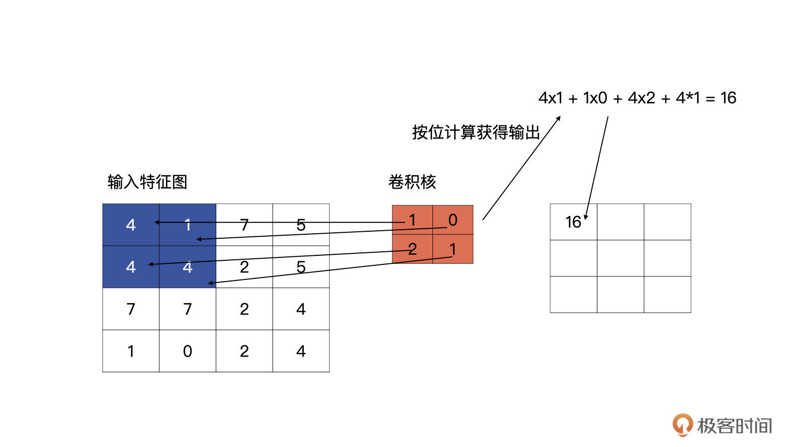
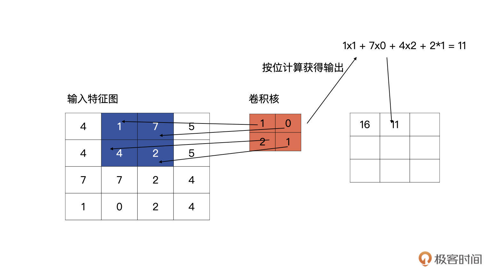
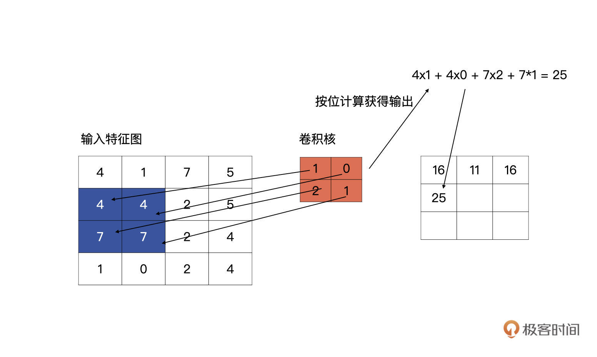
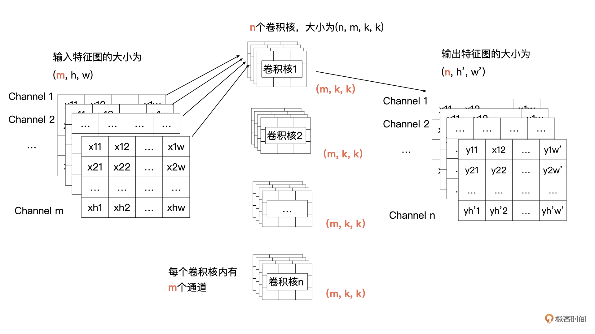
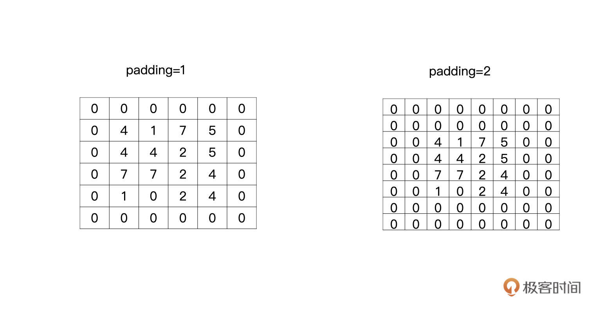
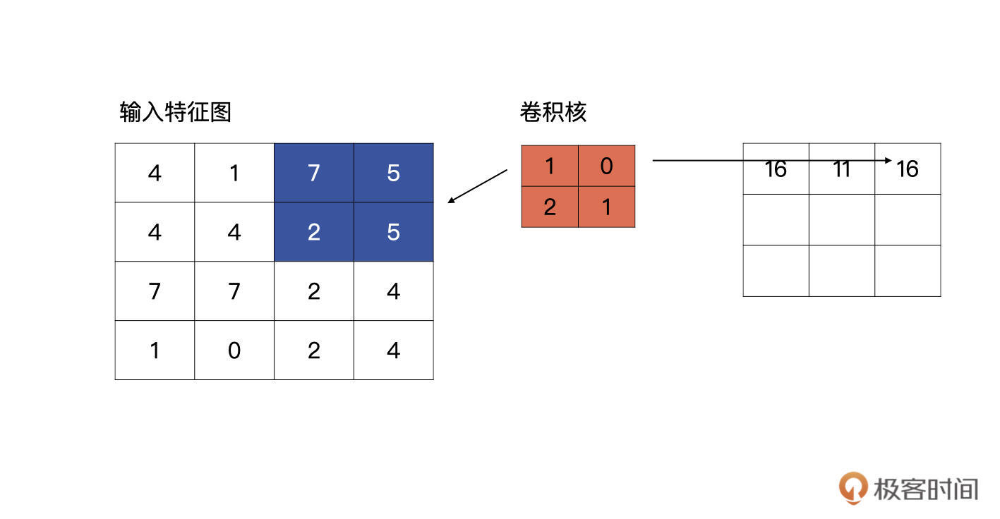
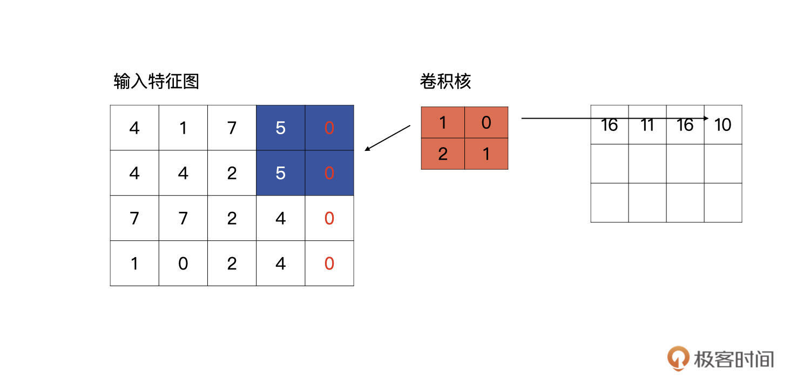
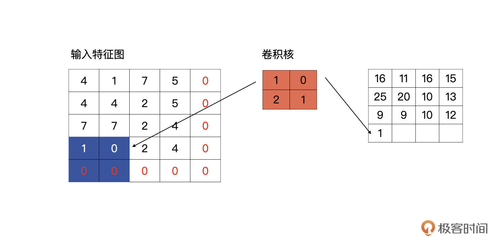

- 00 开篇词 如何高效入门PyTorch？.md.html
- 01 PyTorch：网红中的顶流明星.md.html
- 02 NumPy（上）：核心数据结构详解.md.html
- 03 NumPy（下）：深度学习中的常用操作.md.html
- 04 Tensor：PyTorch中最基础的计算单元.md.html
- 05 Tensor变形记：快速掌握Tensor切分、变形等方法.md.html
- 06 Torchvision（上）：数据读取，训练开始的第一步.md.html
- 07 Torchvision（中）：数据增强，让数据更加多样性.md.html
- 08 Torchvision（下）：其他有趣的功能.md.html
- 09 卷积（上）：如何用卷积为计算机“开天眼”？.md.html
- 10 卷积（下）：如何用卷积为计算机“开天眼”？.md.html
- 11 损失函数：如何帮助模型学会“自省”？.md.html
- 12 计算梯度：网络的前向与反向传播.md.html
- 13 优化方法：更新模型参数的方法.md.html
- 14 构建网络：一站式实现模型搭建与训练.md.html
- 15 可视化工具：如何实现训练的可视化监控？.md.html
- 16 分布式训练：如何加速你的模型训练？.md.html
- 17 图像分类（上）：图像分类原理与图像分类模型.md.html
- 18 图像分类（下）：如何构建一个图像分类模型_.md.html
- 19 图像分割（上）：详解图像分割原理与图像分割模型.md.html
- 20 图像分割（下）：如何构建一个图像分割模型？.md.html
- 21 NLP基础（上）：详解自然语言处理原理与常用算法.md.html
- 22 NLP基础（下）：详解语言模型与注意力机制.md.html
- 23 情感分析：如何使用LSTM进行情感分析？.md.html
- 24 文本分类：如何使用BERT构建文本分类模型？.md.html
- 25 摘要：如何快速实现自动文摘生成？.md.html
- 加餐 机器学习其实就那么几件事.md.html
- 用户故事 Tango：师傅领进门，修行在个人.md.html
- 答疑篇 思考题答案集锦.md.html
- 结束语 人生充满选择，选择与努力同样重要.md.html
- 捐赠
09 卷积（上）：如何用卷积为计算机“开天眼”？
你好，我是方远。
现在刷脸支付的场景越来越多，相信人脸识别你一定不陌生，你有没有想过，在计算机识别人脸之前，我们人类是如何判断一个人是谁的呢？
我们眼睛看到人脸的时候，会先将人脸的一些粗粒度特征提取出来，例如人脸的轮廓、头发的颜色、头发长短等。然后这些信息会一层一层地传入到某一些神经元当中，每经过一层神经元就相当于特征提取。我们大脑最终会将最后的特征进行汇总，类似汇总成一张具体的人脸，用这张人脸去大脑的某一个地方与存好的人名进行匹配。
那落实到我们计算机呢？其实这个过程是一样的，在计算机中进行特征提取的功能，就离不开我们今天要讲的卷积。
可以说，没有卷积的话，深度学习在图像领域不可能取得今天的成就。 那么，就让我们来看看什么是卷积，还有它在PyTorch中的实现吧。
卷积
在使用卷积之前，人们尝试了很多人工神经网络来处理图像问题，但是人工神经网络的参数量非常大，从而导致非常难训练，所以计算机视觉的研究一直停滞不前，难以突破。
直到卷积神经网络的出现，它的两个优秀特点：稀疏连接与平移不变性，这让计算机视觉的研究取得了长足的进步。什么是稀疏连接与平移不变性呢？简单来说，就是稀疏连接可以让学习的参数变得很少，而平移不变性则不关心物体出现在图像中什么位置。
稀疏连接与平移不变性是卷积的两个重要特点，如果你想从事计算机视觉相关的工作，这两个特点必须该清楚，但不是本专栏的重点，这里就不展开了，有兴趣你可以自己去了解。
下面我们直接来看看卷积是如何计算的。
最简单的情况
我们先看最简单的情况，输入是一个4x4的特征图，卷积核的大小为2x2。
卷积核是什么呢？其实就是我们卷积层要学习到的参数，就像下图中红色的示例，下图中的卷积核是最简单的情况，只有一个通道。

输入特征与卷积核计算时，计算方式是卷积核与输入特征按位做乘积运算然后再求和，其结果为输出特征图的一个元素，下图为计算输出特征图第一个元素的计算方式：

完成了第一个元素的计算，我们接着往下看，按以从左向右，从上至下的顺序进行滑动卷积核，分别与输入的特征图进行计算，请看下图，下图为上图计算完毕之后，向右侧滑动一个单元的计算方式：

第一行第三个单元的计算以此类推。说完了同一行的移动，我们再看看，第一行计算完毕，向下滑动的计算方式是什么样的。

第一行计算完毕之后，卷积核会回到行首，然后向下滑动一个单元，再重复以上从左至右的滑动计算。
这里我再给你补充一个知识点，什么是步长？
卷积上下左右滑动的长度，我们称为步长，用stride表示。上述例子中的步长就是1，根据问题的不同，会取不同的步长，但通常来说步长为1或2。不管是刚才说的最简单的卷积计算，还是我们后面要讲的标准卷积，都要用到这个参数。
标准的卷积
好啦，前面只是最简单的情况，现在我们将最简单的卷积计算方式延伸到标准的卷积计算方式。
我们先将上面的例子描述为更加通用的形式，输入的特征有m个通道，宽为w，高为h；输出有n个特征图，宽为\(w^{\\prime}\)，高为\(h^{\\prime}\)；卷积核的大小为kxk。
在刚才的例子中m、n、k、w、h、\(w^{\\prime}\)、\(h^{\\prime}\)的值分别为1、1、2、4、4、3、3。而现在，我们需要把一个输入为(m，h，w)的输入特征图经过卷积计算，生成一个输出为(n, \(h^{\\prime}\), \(w^{\\prime}\))的特征图。
那我们来看看可以获得这个操作的卷积是什么样子的。输出特征图的通道数由卷积核的个数决定的，所以说卷积核的个数为n。根据卷积计算的定义，输入特征图有m个通道，所以每个卷积核里要也要有m个通道。所以，我们的需要n个卷积核，每个卷积核的大小为(m, k, k)。
为了帮你更好地理解刚才所讲的内容，我画了示意图，你可以对照一下：

结合上面的图解可以看到，卷积核1与全部输入特征进行卷积计算，就获得了输出特征图中第1个通道的数据，卷积核2与全部输入特征图进行计算获得输出特征图中第2个通道的数据。以此类推，最终就能计算n个输出特征图。
在开篇的例子中，输入只有1个通道，现在有多个通道了，那我们该如何计算呢？其实计算方式类似，输入特征的每一个通道与卷积核中对应通道的数据按我们之前讲过的方式进行卷积计算，也就是输入特征图中第i个特征图与卷积核中的第i个通道的数据进行卷积。这样计算后会生成m个特征图，然后将这m个特征图按对应位置求和即可，求和后m个特征图合并为输出特征中一个通道的特征图。
我们可以用后面的公式表示当输入有多个通道时，每个卷积核是如何与输入进行计算的。
\(Output\_i\)表示计算第i个输出特征图，i的取值为1到n；
\(kernel\_k\)表示1个卷积核里的第k个通道的数据；
\(input\_k\)表示输入特征图中的第k个通道的数据；
\(bias\_k\)为偏移项，我们在训练时一般都会默认加上；
\(\\star\)为卷积计算；
\[Output\_i = \\sum\_{k=0}^{m}kernel\_k \\star input\_k + bias\_i, \\space \\space \\space \\space i=1,2,…,n\]
我来解释一下为什么要加bias。就跟回归方程一样，如果不加bias的话，回归方程为y=wx不管w如何变化，回归方程都必须经过原点。如果加上bias的话，回归方程变为y=wx+b，这样就不是必须经过原点，可以变化的更加多样。
好啦，卷积计算方式的讲解到这里就告一段落了。下面我们看看在卷积层中有关卷积计算的另外一个重要参数。
Padding
让我们回到开头的例子，可以发现，输入的尺寸是4x4，输出的尺寸是3x3。你有没有发现，输出的特征图变小了？没错，在有多层卷积层的神经网络中，特征图会越来越小。
但是，有的时候我们为了让特征图变得不是那么小，可以对特征图进行补零操作。这样做主要有两个目的：
1.有的时候需要输入与输出的特征图保持一样的大小；- 2.让输入的特征保留更多的信息。
这里我举个例子，带你看看，一般什么情况下会希望特征图变得不那么小。
通过刚才的讲解我们知道，如果不补零且步长（stride）为1的情况下，当有多层卷积层时，特征图会一点点变小。如果我们希望有更多层卷积层来提取更加丰富的信息时，就可以让特征图变小的速度稍微慢一些，这个时候就可以考虑补零。
这个补零的操作就叫做padding，padding等于1就是补一圈的零，等于2就是补两圈的零，如下图所示：

在Pytorch中，padding这个参数可以是字符串、int和tuple。
我们分别来看看不同参数类型怎么使用：当为字符串时只能取\(^{\\prime}valid^{\\prime}\)与\(^{\\prime}same^{\\prime}\)。当给定整型时，则是说要在特征图外边补多少圈0。如果是tuple的时候，则是表示在特征图的行与列分别指定补多少零。
我们重点看一下字符串的形式，相比于直接给定补多少零来说，我认为字符串更加常用。其中，\(^{\\prime}valid^{\\prime}\)就是没有padding操作，就像开头的例子那样。\(^{\\prime}same^{\\prime}\)则是让输出的特征图与输入的特征图获得相同的大小。
那当padding为same时，到底是怎么计算的呢？我们继续用开篇的例子说明，现在padding为\(^{\\prime}same^{\\prime}\)了。

当滑动到特征图最右侧时，发现输出的特征图的宽与输入的特征图的宽不一致，它会自动补零，直到输出特征图的宽与输入特征图的宽一致为止。如下图所示：

高的计算和宽的计算同理，当计算到特征图的底部时，发现输出特征图的高与输入特征图的高不一致时，它同样会自动补零，直到输入和输出一致为止，如下图所示。

完成上述操作，我们就可以获得与输入特征图有相同高、宽的输出特征图了。理论讲完了，我们还是要学以致用，在实践中深入体会。在下面的练习中，我们会实际考察一下当padding为same时，是否像我们说的这样计算。
PyTorch中的卷积
卷积操作定义在torch.nn模块中，torch.nn模块为我们提供了很多构建网络的基础层与方法。
在torch.nn模块中，关于今天介绍的卷积操作有nn.Conv1d、nn.Conv2d与nn.Conv3d三个类。
请注意，我们上述的例子都是按照nn.Conv2d来介绍的，nn.Conv2d也是用的最多的，而nn.Conv1d与nn.Conv3d只是输入特征图的维度有所不一样而已，很少会被用到。
让我们先看看创建一个nn.Conv2d需要哪些必须的参数：
# Conv2d类
class torch.nn.Conv2d(in_channels,
out_channels,
kernel_size,
stride=1,
padding=0,
dilation=1,
groups=1,
bias=True,
padding_mode='zeros',
device=None,
dtype=None)
我们挨个说说这些参数。首先是跟通道相关的两个参数：in_channels是指输入特征图的通道数，数据类型为int，在标准卷积的讲解中in_channels为m；out_channels是输出特征图的通道数，数据类型为int，在标准卷积的讲解中out_channels为n。
kernel_size是卷积核的大小，数据类型为int或tuple，需要注意的是只给定卷积核的高与宽即可，在标准卷积的讲解中kernel_size为k。
stride为滑动的步长，数据类型为int或tuple，默认是1，在前面的例子中步长都为1。
padding为补零的方式，注意当padding为’valid’或’same’时，stride必须为1。
对于kernel_size、stride、padding都可以是tuple类型，当为tuple类型时，第一个维度用于height的信息，第二个维度时用于width的信息。
bias是否使用偏移项。
还有两个参数：dilation与groups，具体内容下节课我们继续展开讲解，你先有个印象就行。
验证same方式
接下来，我们做一个练习，验证padding为same时，计算方式是否像我们所说的那样。过程并不复杂，一共三步，分别是创建输入特征图、设置卷积以及输出结果。
先来看第一步，我们创建好例子中的（4，4，1）大小的输入特征图，代码如下：
import torch
import torch.nn as nn
input_feat = torch.tensor([[4, 1, 7, 5], [4, 4, 2, 5], [7, 7, 2, 4], [1, 0, 2, 4]], dtype=torch.float32)
print(input_feat)
print(input_feat.shape)
# 输出：
tensor([[4., 1., 7., 5.],
[4., 4., 2., 5.],
[7., 7., 2., 4.],
[1., 0., 2., 4.]])
torch.Size([4, 4])
第二步，创建一个2x2的卷积，根据刚才的介绍，输入的通道数为1，输出的通道数为1，padding为’same’，所以卷积定义为：
conv2d = nn.Conv2d(1, 1, (2, 2), stride=1, padding='same', bias=True)
# 默认情况随机初始化参数
print(conv2d.weight)
print(conv2d.bias)
# 输出：
Parameter containing:
tensor([[[[ 0.3235, -0.1593],
[ 0.2548, -0.1363]]]], requires_grad=True)
Parameter containing:
tensor([0.4890], requires_grad=True)
需要注意的是，默认情况下是随机初始化的。一般情况下，我们不会人工强行干预卷积核的初始化，但是为了验证今天的例子，我们对卷积核的参数进行干预。请注意下面代码中卷积核的注释，代码如下：
conv2d = nn.Conv2d(1, 1, (2, 2), stride=1, padding='same', bias=False)
# 卷积核要有四个维度(输入通道数，输出通道数，高，宽)
kernels = torch.tensor([[[[1, 0], [2, 1]]]], dtype=torch.float32)
conv2d.weight = nn.Parameter(kernels, requires_grad=False)
print(conv2d.weight)
print(conv2d.bias)
# 输出：
Parameter containing:
tensor([[[[1., 0.],
[2., 1.]]]])
None
完成之后就进入了第三步，现在我们已经准备好例子中的输入数据与卷积数据了，下面只需要计算一下，然后输出就可以了，代码如下：
output = conv2d(input_feat)
---------------------------------------------------------------------------
RuntimeError Traceback (most recent call last)
/var/folders/pz/z8t8232j1v17y01bkhyrl01w0000gn/T/ipykernel_29592/2273564149.py in <module>
----> 1 output = conv2d(input_feat)
~/Library/Python/3.8/lib/python/site-packages/torch/nn/modules/module.py in _call_impl(self, *input, **kwargs)
1049 if not (self._backward_hooks or self._forward_hooks or self._forward_pre_hooks or _global_backward_hooks
1050 or _global_forward_hooks or _global_forward_pre_hooks):
-> 1051 return forward_call(*input, **kwargs)
1052 # Do not call functions when jit is used
1053 full_backward_hooks, non_full_backward_hooks = [], []
~/Library/Python/3.8/lib/python/site-packages/torch/nn/modules/conv.py in forward(self, input)
441
442 def forward(self, input: Tensor) -> Tensor:
--> 443 return self._conv_forward(input, self.weight, self.bias)
444
445 class Conv3d(_ConvNd):
~/Library/Python/3.8/lib/python/site-packages/torch/nn/modules/conv.py in _conv_forward(self, input, weight, bias)
437 weight, bias, self.stride,
438 _pair(0), self.dilation, self.groups)
--> 439 return F.conv2d(input, weight, bias, self.stride,
440 self.padding, self.dilation, self.groups)
441
RuntimeError: Expected 4-dimensional input for 4-dimensional weight[1, 1, 2, 2], but got 2-dimensional input of size [4, 4] instead
结合上面代码，你会发现这里报错了，提示信息是输入的特征图需要是一个4维的，而我们的输入特征图是一个4x4的2维特征图。这是为什么呢？- 请你记住，Pytorch输入tensor的维度信息是(batch_size, 通道数，高，宽)，但是在我们的例子中只给定了高与宽，没有给定batch_size（在训练时，不会将所有数据一次性加载进来训练，而是以多个批次进行读取的，每次读取的量成为batch_size）与通道数。所以，我们要回到第一步将输入的tensor改为(1,1,4,4)的形式。
你还记得我在之前的讲解中提到过怎么对数组添加维度吗？
在Pytorch中unsqueeze()对tensor的维度进行修改。代码如下：
input_feat = torch.tensor([[4, 1, 7, 5], [4, 4, 2, 5], [7, 7, 2, 4], [1, 0, 2, 4]], dtype=torch.float32).unsqueeze(0).unsqueeze(0)
print(input_feat)
print(input_feat.shape)
# 输出：
tensor([[[[4., 1., 7., 5.],
[4., 4., 2., 5.],
[7., 7., 2., 4.],
[1., 0., 2., 4.]]]])
torch.Size([1, 1, 4, 4])
这里，unsqueeze()中的参数是指在哪个位置添加维度。- 好，做完了修改，我们再次执行代码。
output = conv2d(input_feat)
输出：
tensor([[[[16., 11., 16., 15.],
[25., 20., 10., 13.],
[ 9., 9., 10., 12.],
[ 1., 0., 2., 4.]]]])
你可以看看，跟我们在例子中推导的结果一不一样？
总结
恭喜你完成了今天的学习。今天所讲的卷积非常重要，它是各种计算机视觉应用的基础，例如图像分类、目标检测、图像分割等。
卷积的计算方式是你需要关注的重点。具体过程如下图所示，输出特征图的通道数由卷积核的个数决定的，下图中因为有n个卷积核，所以输出特征图的通道数为n。输入特征图有m个通道，所以每个卷积核里要也要有m个通道。

其实卷积背后的理论比较复杂，但在PyTorch中实现却很简单。在卷积计算中涉及的几大要素：输入通道数、输出通道数、步长、padding、卷积核的大小，分别对应的就是PyTorch中nn.Conv2d的关键参数。所以，就像前面讲的那样，我们要熟练用好nn.Conv2d()。
之后，我还带你做了一个验证same方式的练习，动手跑跑代码会帮你形成直观印象，快速掌握这部分内容。
当然，对于卷积来说不光光有今天介绍的这种比较标准的卷积，还有各种变形。例如，今天没有讲到的dilation参数与groups参数，基于这两个参数实现的卷积操作，我会在下一节课中为展开，敬请期待。
每课一练
请你想一想，padding为’same’时，stride可以为1以外的数值吗？
欢迎你在留言区记录你的疑问或收获，也推荐你把这节课分享给更多朋友、同事。
我是方远，我们下节课见！
© 2019 - 2023 Liangliang Lee. Powered by gin and hexo-theme-book.